다섯개의 나라
버전 비교 · 이전 버전도 계속 플레이할 수 있습니다.


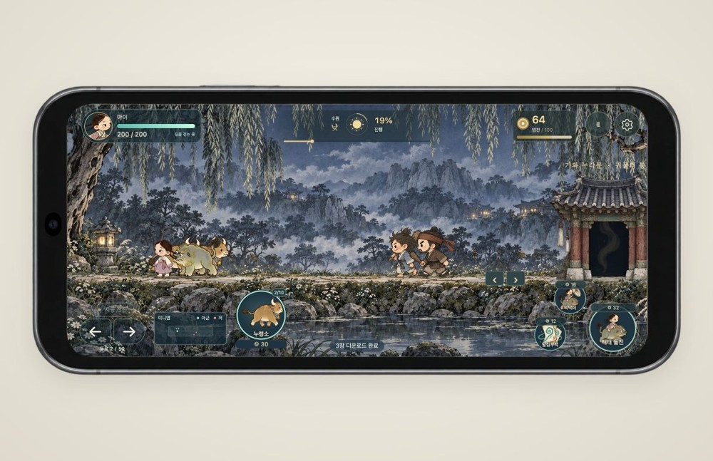
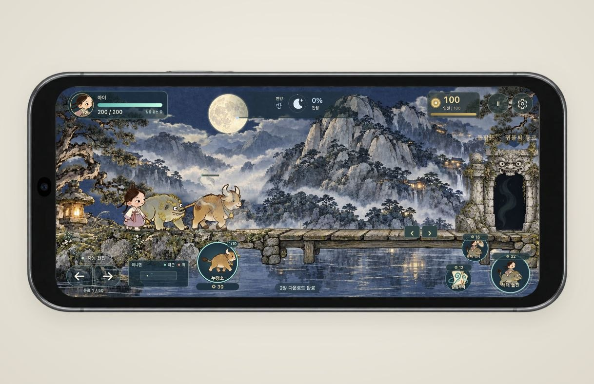
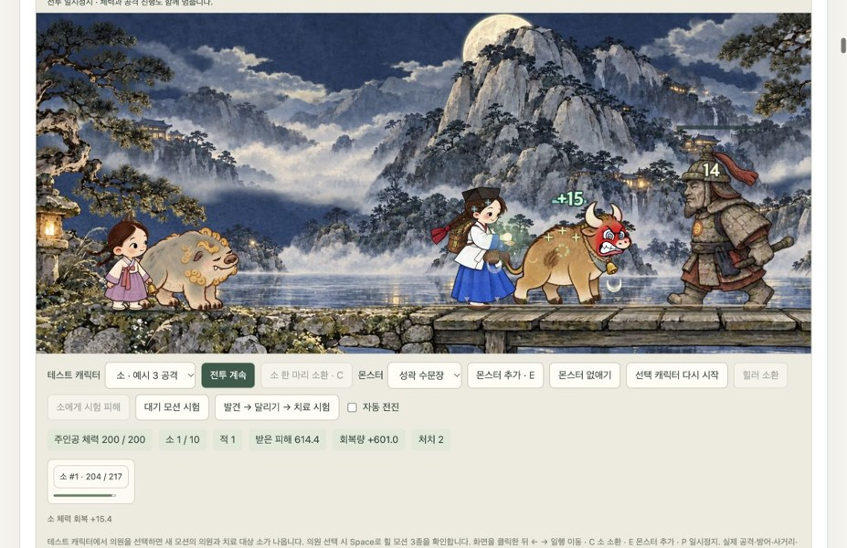
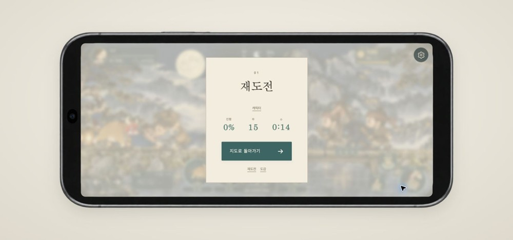
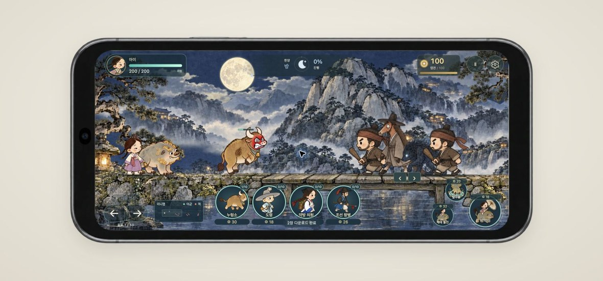
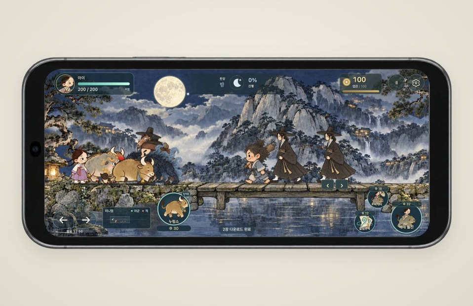
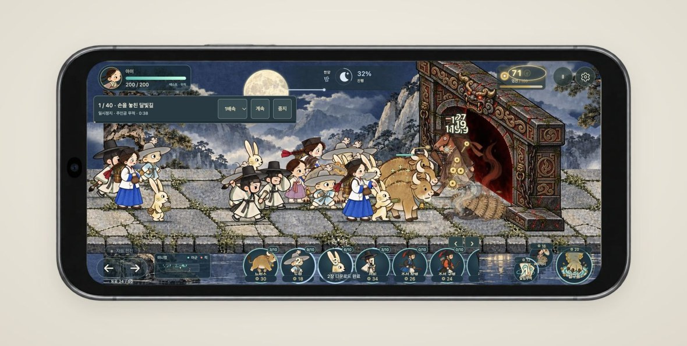
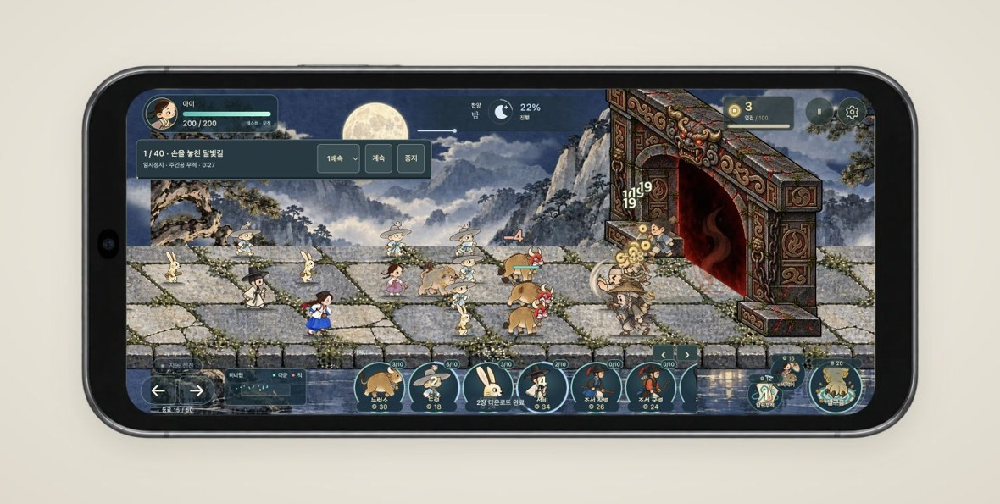
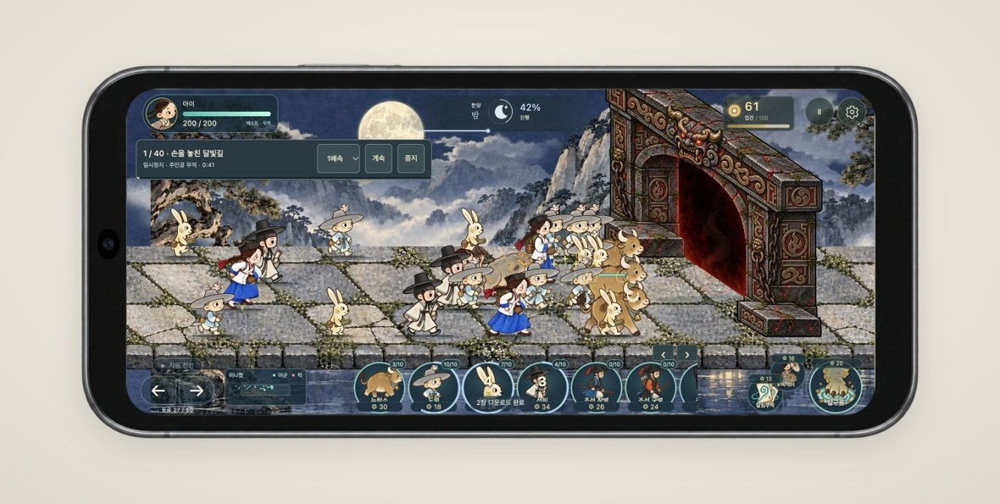
캐릭터 중간 크기 2026.10.17 · v136
캐릭터 .675배와 원래 넓은 길의 공개본을 보존했습니다. 좁은 길과30% 큰 캐릭터의 v137과 비교할 수 있습니다.
이 버전 열기 ↗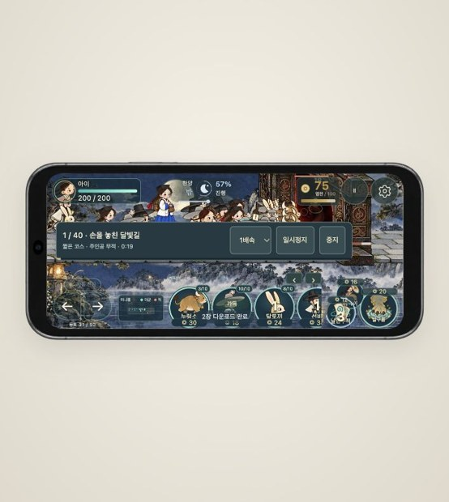
길 절반·캐릭터30% 확대 2026.10.17 · v137
v136 대비 길 세로50%와 캐릭터130%의 공개본을 보존했습니다. 소환 카드와 접지를 개선한 v138과 비교할 수 있습니다.
이 버전 열기 ↗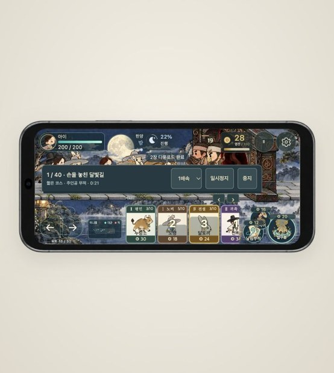
소환 카드·접지·즉시 보행 2026.10.17 · v138
v138 카드 등급·접지·즉시 보행 공개본입니다. v139 개별 카드와 중앙 출발·전투 최적화본과 비교할 수 있습니다.
이 버전 열기 ↗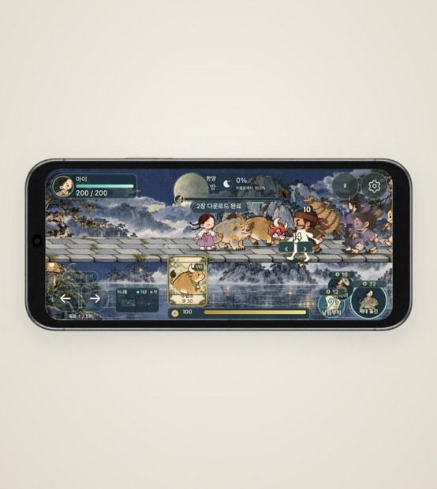
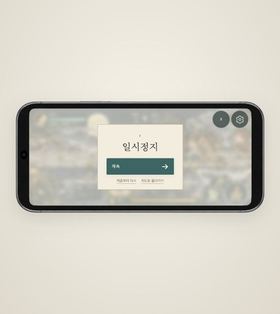
당파 창병·세로 모션 테스트 2026.10.17 · v140
v140 개별 카드·접지·중앙 출발 공개본입니다. v141 아이 이동·창병 카드 수정본과 비교할 수 있습니다.
이 버전 열기 ↗아이 이동·창병 카드 2026.10.17 · v141
v141 아이 이동·창병 카드 공개본입니다. v142 다수 캐릭터·그림 사전 준비 최적화와 비교할 수 있습니다.
이 버전 열기 ↗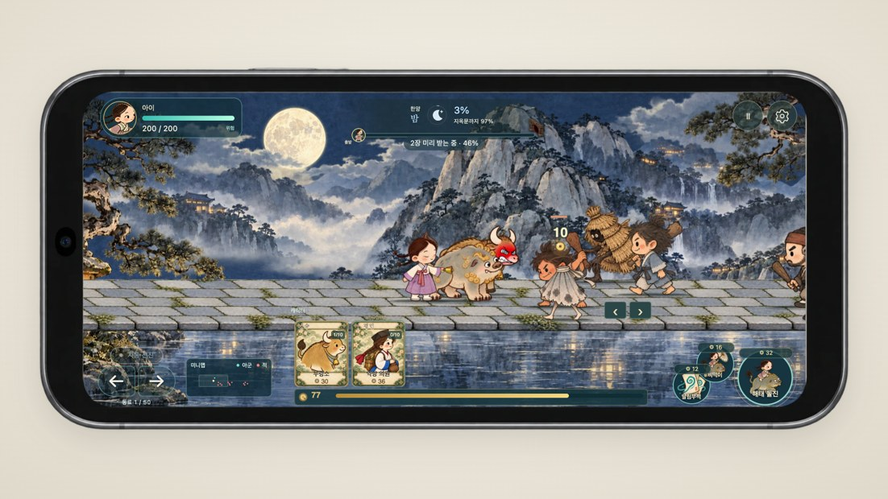
그림 사전 준비·다수 캐릭터 최적화 2026.10.17 · v142
v142 그림 사전 준비·다수 캐릭터 최적화 공개본입니다. v143 출발 프레임 유지 수정와 비교할 수 있습니다.
이 버전 열기 ↗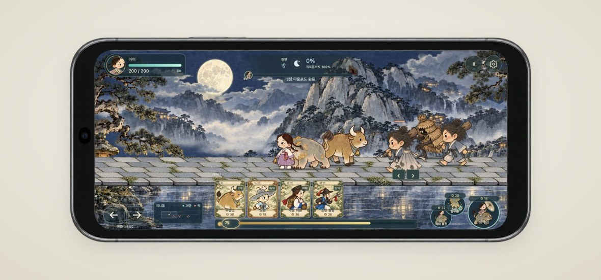
창병 기합 찌르기·피격 색·발 접지 2026.10.17 · v143
v143 창병 기합 찌르기·피격 색·발 접지 공개본입니다. v144 11명 기본 해금와 비교할 수 있습니다.
이 버전 열기 ↗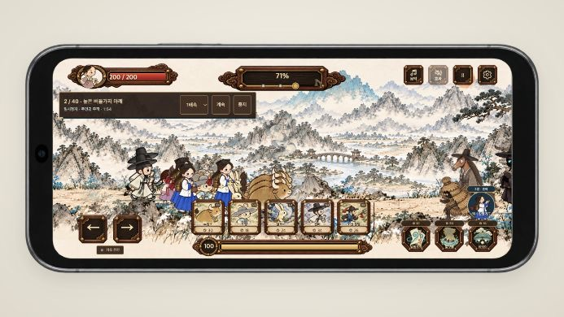
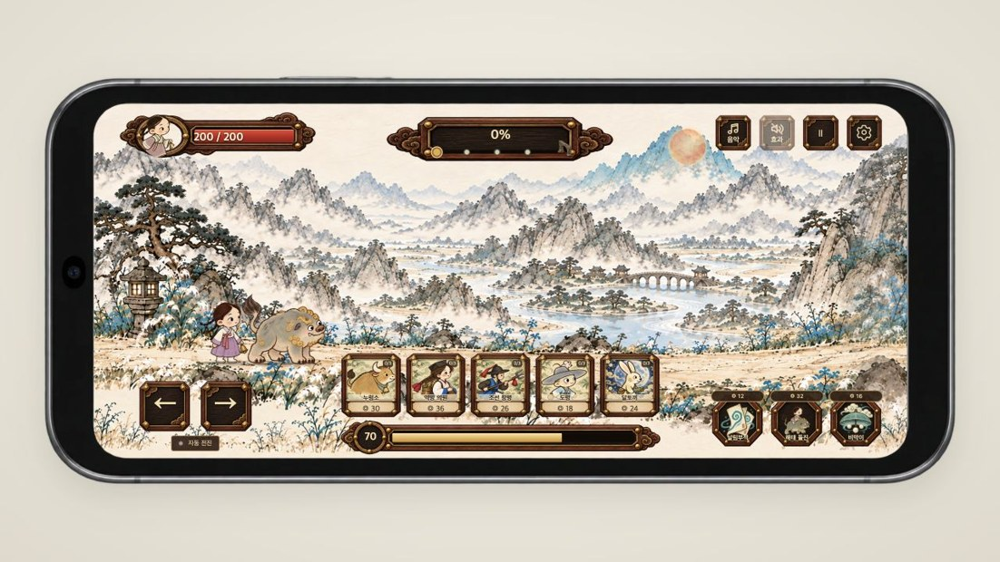
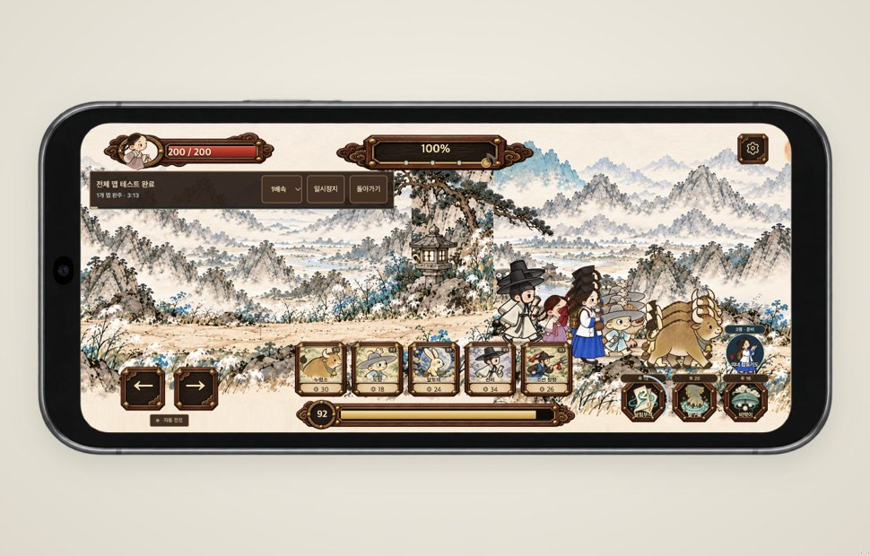
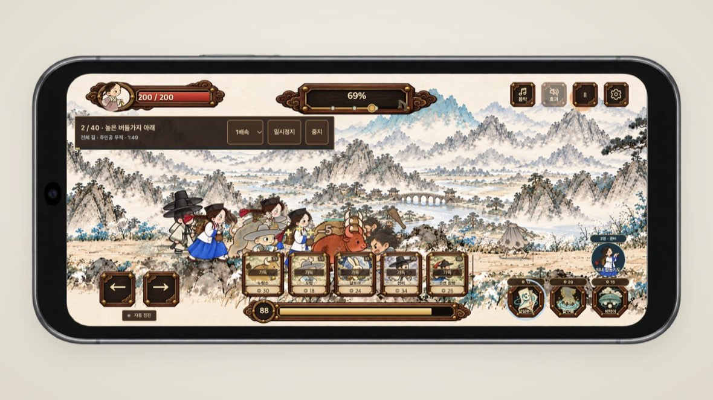

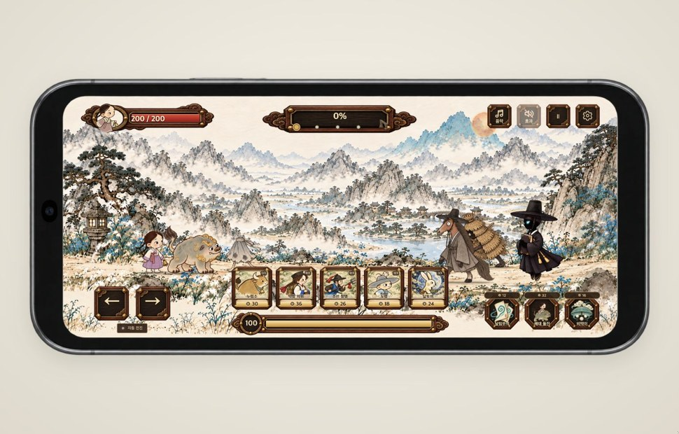
각 버전은 별도 화면으로 열립니다. 같은 브라우저의 기존 플레이 기록을 함께 사용합니다. 새 버전 반영 후에도 이전 버전을 제거하지 않습니다.